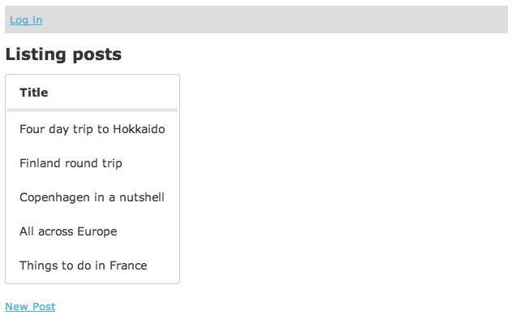
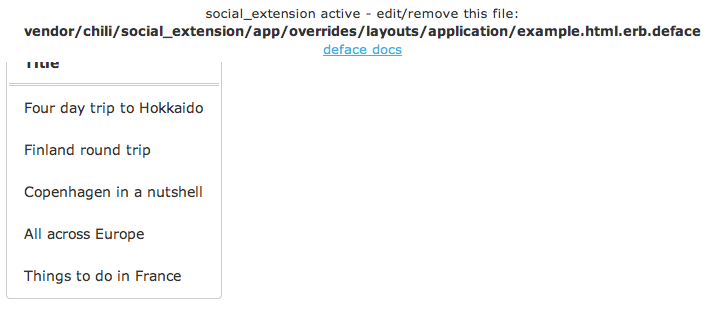

Have you ever wanted to test out a new feature on only a subset of users? Did that implementation end up being lots of if/else statements embedded in the main code? If so, Chili can help.
Chili is built on top of Rails Engines and Deface and allows you to conditionally add new/modify existing views, while leaving the main code untouched.
The easiest way to explain how Chili works is through an example. Lets say we have a simple site were people can submit posts about their travel experiences:
It is hard to tell which posts are interesting so we decide to test out a new social feature where users can like certain posts and see which are popular.
We want to first test out this feature on a set of beta testers before deciding whether to release it to everyone.
One way of doing it would be something like this:
<tr>
<td><%= post.title %></td>
<% if logged_in? && current_user.beta_tester? %>
<td><%= link_to 'Like!', likes_path(like: { post_id: post }), method: 'post' %></td>
<% end %>
</tr>
However, adding conditionals in the code like this can quickly become unmaintainable as more features are added. Also, what about the likes_controller? How do we make sure that non-beta testers can't access this?
Lets try a cleaner approach using Chili
First add Chili to your main app's gemfile and run bundle:
gem 'chili'
Then generate a new extension named "social":
$ rails g chili:extension social
This will:
vendor/chili/social_extension containing the basic structure for the extension
group :chili do
gem 'social_extension', path: 'vendor/chili/social_extension'
end
Since the extension is mounted as a gem we restart the app:
The message at the top is injected into the layout by the extension and shows us that the extension is working!
Chili uses Deface overrides to dynamically modify existing view templates (see Deface docs for details).
The message shown is an example of how this works.
For now, let's remove the example override and add our own. We can start out by adding a disclaimer under the list of posts. Our current posts/index view looks something like this:
<table id='posts'>
<tr>
<th>Title</th>
</tr>
<%= render @posts %>
</table>
We can modify this by adding an override to the extension, mirroring the path in the main app:
<!-- insert_after '#posts' -->
<p class='disclaimer'>Like functionality is in beta</p>
By default a newly generated extension will be active for everyone. Let's change this so that only beta testers can see this new extension by editing the active_if block in lib/social_extension.rb
module SocialExtension
extend Chili::Activatable
active_if { logged_in? && current_user.beta_tester? }
end
The context of the active_if block is the application controller so you can use any methods available to that.
Run rails g scaffold Like from within the extension's directory. The new resource will be namespaced to SocialExtension::Like
and automounted as an isolated engine in the main app at /chili/social_extension/likes,
but will only be accessible when active_if is true.
Migrations are handled the same way as engines. Use the following commands after you've added a new migration to your extension:
$ rake social_extension:migrations:install
$ rake db:migrate
Create a model with the same name as the one you want to modify by running: rails g model User --migration=false inside your extension's directory
and edit it to inherit from the original:
# app/models/social_extension/user.rb
module SocialExtension
class User < ::User
has_many :likes
end
end
Access in your overrides/extension views through the namespaced model:
<%= SocialExtension::User.first.likes %>
<%= current_user.becomes(SocialExtension::User).likes %>
Files added to the extension's app/assets/social_extension/javascripts|stylesheets directory are automatically injected into the layout using a pre-generated override:
<% # app/overrides/layouts/application/assets.html.erb.deface %>
<!-- insert_bottom 'head' -->
<%= stylesheet_link_tag 'social_extension/application' %>
<%= javascript_include_tag 'social_extension/application' %>
If you don't need any css/js in your extension, you can remove this file.